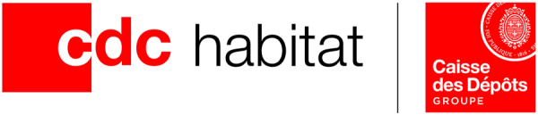

Génération de livrables
L'IA sur mesure des boutiques de M&A.
Génération d'IM, relecture de VDD, socle d'informations centralisé : nous concevons et construisons vos outils d'IA, en direct avec vos équipes.
Deux interlocuteurs, technique et métierdédiés uniquement à votre projet, sans intermédiaireDeux interlocuteurs, technique et métierdédiés uniquement à votre projet, sans intermédiaire
Ils nous font confiance


Exemples de cas d'usage
Des solutions à la mesure de vos exigences.
Quatre exemples de ce que nous construisons. Chaque outil se conçoit avec vos équipes, selon vos besoins.
1
Relecture documentaire
De la v1 à la vF, en moins de versions.
Socle d'informations centralisé
Un savoir qui s'enrichit à chaque dossier.
Automatisations
Automatisez ce qui revient chaque semaine.
Étude de cas
Une boutique de M&A française, leader du segment small et mid cap.
« Nous avons transformé notre manière de travailler. »
+120 héconomisées par mois
+45 %d'amélioration dans la production des documents
−30 %de temps de préparation
Ce que nous avons construit pour elle
- Fiche société
- Revue d'IM
- Revue de VDD et de pitchs
- Automatisation du CRM
Équipe
Une double expertise, produit et technique.
Conçoit et construit vos outils, jusqu'à leur mise en service.
Ingénieur diplômé de Télécom SudParis, Kevin a d'abord développé des applications web de bout en bout, puis a pris le virage de l'IA : agents, systèmes RAG et automatisations intégrés aux outils de ses clients. Il a notamment travaillé pour OMNES Éducation, CDC Biodiversité ou Hublo.
Sur chaque projet
CadrageArchitectureDéveloppementMise en production
Traduit vos façons de travailler en outils qui les respectent.
Responsable produit, Arnaud connaît les métiers de la finance et leurs outils de l'intérieur : diplômé du programme Grande École de l'ESCP, il est passé par les équipes M&A et ECM de Santander et de CACIB. Il rédige les fiches métier, cadre chaque projet avec vos équipes et en mène la recette.
Sur chaque projet
CadrageFiches métierRecetteSuivi
Sécurité et confidentialité
Vos dossiers restent les vôtres.
Conforme au RGPD
Données hébergées dans l'Union européenne. Un accord de traitement des données encadre chaque projet.
Aucun entraînement sur vos données
Vos documents, vos questions et les réponses ne servent jamais à entraîner un modèle, ni le nôtre, ni celui de nos fournisseurs.
Un espace isolé par cabinet
Vos données sont chiffrées et cloisonnées, séparées de celles des autres clients. Seules vos équipes y ont accès.
Installation chez vous
Si votre politique l'exige, l'outil tourne sur votre propre infrastructure ou votre cloud.
Questions fréquentes
Les questions que vous vous posez sûrement.
Nous utilisons déjà Claude. Pourquoi passer par vous ?
Nous ne remplaçons pas Claude : nous l'utilisons, aux côtés d'autres modèles. Ce que nous construisons, c'est ce qui manque entre Claude et vos dossiers : l'accès à vos pièces, des citations vérifiables, des droits d'accès par équipe et un traitement des données en Europe. Pour une question ponctuelle sur un document, Claude dans le navigateur suffit très bien : les deux usages cohabitent.
Quelle est la différence entre vos outils et Claude Cowork ?
Claude Cowork est un excellent assistant généraliste, mais il a deux limites pour un cabinet de M&A. La première tient à la confidentialité : d'après la documentation d'Anthropic, Cowork n'est pas couvert par la « zéro conservation » des données. Chez Anthropic, il faut donc choisir entre l'agent et la garantie. Avec nos outils, vous avez les deux. La seconde tient au volume : Claude, dans Cowork comme dans le chat, ne lit qu'une quantité limitée de documents à la fois, et sa précision baisse à mesure qu'on lui en donne. Nos outils se branchent sur l'ensemble des documents de votre cabinet, sans limite de volume, vont chercher les pages utiles, et chaque chiffre renvoie à la page d'où il vient.
Claude Enterprise n'est-il pas déjà sécurisé ?
Pour le chat, oui. Mais toutes les versions de Claude n'offrent pas les mêmes garanties : d'après la documentation d'Anthropic, le chat et Cowork ne bénéficient pas de la « zéro conservation » des données, et les données sont stockées aux États-Unis par défaut. Nos outils appellent Claude par son accès professionnel, dans une région européenne, où le stockage comme le traitement restent en Europe.
Quelle IA utilisez-vous ?
Nos outils fonctionnent avec n'importe quel modèle du marché. Nous travaillons le plus souvent avec ceux de Claude (Anthropic), Gemini (Google) et OpenAI, et certains clients préfèrent des modèles open source. La plupart des entreprises préfèrent aujourd'hui Claude. Mais le leader de l'IA d'aujourd'hui ne sera pas forcément celui de demain : nos outils ne dépendent d'aucun fournisseur. Changer de modèle est un simple réglage, sans refaire l'outil.
À quelles sources l'outil se connecte-t-il ?
À vos outils internes et aux bases auxquelles vous êtes abonnés, par exemple Mergermarket, S&P Capital IQ, PitchBook ou Pappers, sous réserve que leurs conditions générales d'utilisation l'autorisent. Nous ne contournons jamais les conditions générales des services que vous utilisez.
Nos données sont-elles en sécurité ? Quelles normes de conformité respectez-vous ?
Vos données sont traitées dans l'Union européenne, dans le respect du RGPD, et ne servent jamais à entraîner un modèle. Chaque dossier a son propre espace, avec des droits d'accès par équipe et un journal des opérations. Si votre politique l'exige, l'outil peut être installé sur votre propre infrastructure. Nous répondons à votre questionnaire de sécurité fournisseur.
Combien de temps avant d'avoir un premier outil ?
Nous partons d'un de vos dossiers. Un premier prototype est testé par votre équipe sur un cas réel avant tout déploiement. Le délai est fixé dès le premier échange, selon l'outil et les sources à connecter.
Combien ça coûte ?
Le prix dépend de l'outil, des sources à connecter et du nombre d'utilisateurs. Il est fixé après le premier échange, une fois le besoin compris : vous connaissez le montant avant de commencer.